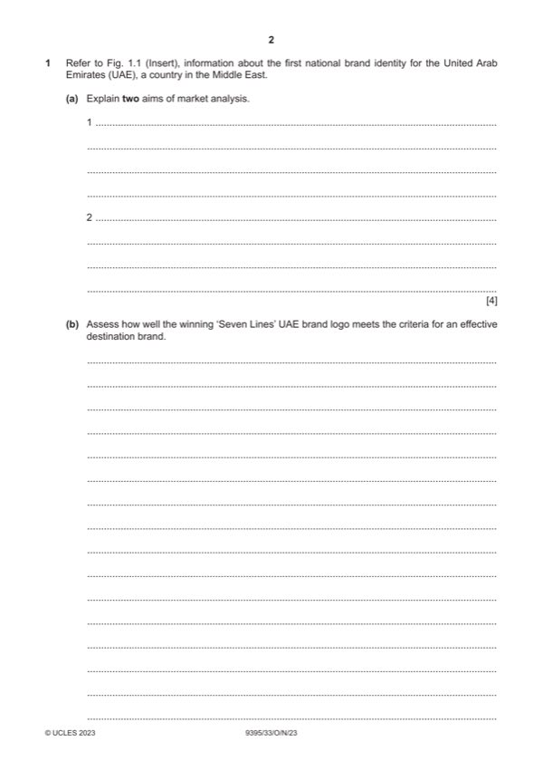

Question 1

Original paper page 2
Part 1(a) — solution
- Identify the market (1) who their customers and competitors are (1)
- Customer needs and wants (1) market analysis enables a destination to understand what they must provide to satisfy
- Competition (1) understanding how well they are performing compared to their competitors (1)
- Travel trends and customer behaviours (1) analysis allows a destination to keep abreast of any changes in preferences
- Popularity (1) seeing if there is an increase or decrease will help work out how to market the destination better (1)
- Stage on the Butler model (1) to help with strategic planning (1)
Mark points
- Identify the market (1) who their customers and competitors are (1)
- Customer needs and wants (1) market analysis enables a destination to understand what they must provide to satisfy
- Competition (1) understanding how well they are performing compared to their competitors (1)
- Travel trends and customer behaviours (1) analysis allows a destination to keep abreast of any changes in preferences
- Popularity (1) seeing if there is an increase or decrease will help work out how to market the destination better (1)
- Stage on the Butler model (1) to help with strategic planning (1)
Part 1(b) — solution
- Memorable – shape of the UAE map
- Attractive – colours of the UAE flag
- Matched to attributes – 7 states
- Consistent with position – quite a serious logo
- Easily understood – there are lots of clues about the destination included
- Integrated – included on corporate communications
- Sustained – to last 50 years
- Reflective of experiences – tied in with the slogan
- Targeted – appeals to existing and potential visitors
- Accepted by stakeholders – went through a voting process
- Credible – professional looking
Mark points
- Memorable – shape of the UAE map
- Attractive – colours of the UAE flag
- Matched to attributes – 7 states
- Consistent with position – quite a serious logo
- Easily understood – there are lots of clues about the destination included
- Integrated – included on corporate communications
- Sustained – to last 50 years
- Reflective of experiences – tied in with the slogan
- Targeted – appeals to existing and potential visitors
- Accepted by stakeholders – went through a voting process
- Credible – professional looking
Part 1(b) — solution
Level 2 (4–6 marks)
Candidates provide an explanation of how well the winning ‘Seven Lines’ UAE brand logo meets the criteria for an effective
destination brand. Candidates will show an understanding of the question and include identification and explanation of one,
two or more ways in which the logo meets the criteria. The answer is relevant and shows reasonable knowledge and
understanding of specific marketing concepts and principles, with some use of appropriate terminology and may make
some reference to the UAE logo
Level 1 (1–3 marks)
Candidates identify/describe up to three ways the winning ‘Seven Lines’ UAE brand logo meets the criteria for an effective
destination brand. The answer shows limited knowledge and understanding of specific marketing concepts and principles
with limited use of appropriate terminology.
Level 0 (0 marks)
No content worthy of credit
2023 Page 10 of 16
9395/33 Cambridge International AS & A Level – Mark Scheme October/November 2023
Mark points
- Include the ideas shown in the solution above.
Part 1(c) — solution
- A destination is made up of composite products, not just one product – 7 Emirates each with their own identity
- Intangibility of the tourism offering – only those who visit can really experience what they destination has to offer –
- The destination’s reputation and image are not created by the destination management organisations in charge of its
- UAE has a diverse range of organisations and partners involved in crafting and delivering the brand – this is open
- Lack of funding for marketing efforts – marketing is expensive – the UAE is a financially stable country but each
- UAE has never had a national brand previously – so it may be difficult to implement and make a unique identity stick –
- Destination image is affected by natural disasters, political unrest, acts of terrorism and other social, economic
Mark points
- A destination is made up of composite products, not just one product – 7 Emirates each with their own identity
- Intangibility of the tourism offering – only those who visit can really experience what they destination has to offer –
- The destination’s reputation and image are not created by the destination management organisations in charge of its
- UAE has a diverse range of organisations and partners involved in crafting and delivering the brand – this is open
- Lack of funding for marketing efforts – marketing is expensive – the UAE is a financially stable country but each
- UAE has never had a national brand previously – so it may be difficult to implement and make a unique identity stick –
- Destination image is affected by natural disasters, political unrest, acts of terrorism and other social, economic
Part 1(c) — solution
Level 2 (5–8 marks)
Candidates provide an explanation/analysis of the challenges the Nation Brand Office is likely to face in branding the UAE
for the first time. Candidates will show an understanding of the question and include identification and explanation of one,
two or examples of challenges. The answer is relevant and shows reasonable knowledge and understanding of specific
marketing concepts and principles, with some use of appropriate terminology.
Level 1 (1–4 marks)
Candidates identify/describe up to three of the challenges the Nation Brand Office is likely to face in branding the UAE for
the first time. The answer shows limited knowledge and understanding of specific marketing concepts and principles with
limited use of appropriate terminology.
Level 0 (0 marks)
No content worthy of credit.
Mark points
- Include the ideas shown in the solution above.